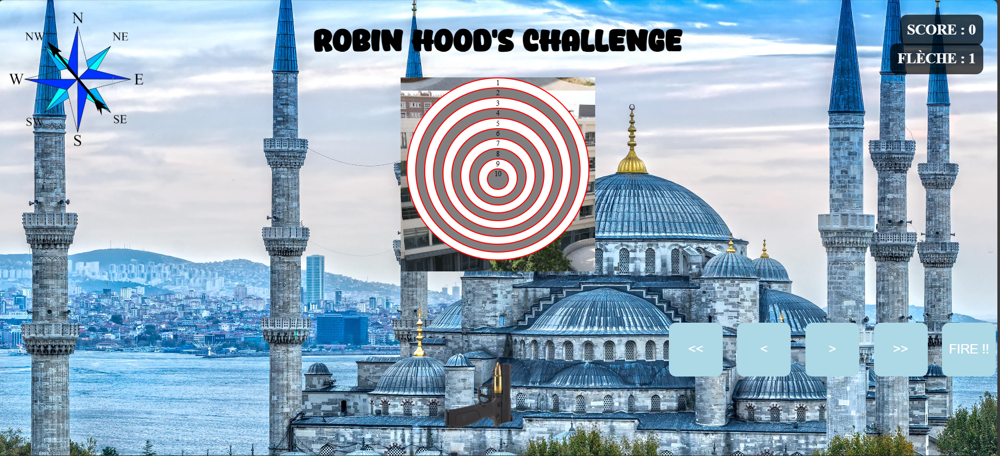

Projet : Jeu de Tir à l’Arc

Ce projet est une application web interactive simulant un jeu de tir à l’arc, développé en première année. Il a été réalisé en HTML, CSS et JavaScript et découpé en 6 étapes de développement progressif.
L’objectif était de concevoir un jeu dynamique, où le joueur peut ajuster son tir en fonction du vent, et obtenir un score en fonction de la précision de ses tirs.
Étapes de développement
- Étape 1 : Création d’une cible avec 10 zones et un fond.
- Étape 2 : Personnalisation de l’apparence de la cible.
- Étape 3 : Ajout d’une arme, d’un projectile et d’un bouton "Fire".
- Étape 4 : Activation du tir avec du JavaScript.
- Étape 5 : Intégration du vent et de boutons pour ajuster la visée.
- Étape 6 : Affichage du score et gestion des tirs successifs.
Fonctionnalités
- Tirer un projectile sur une cible.
- Ajuster la trajectoire en fonction du vent.
- Déplacer l’arc pour mieux viser.
- Calculer et afficher le score.